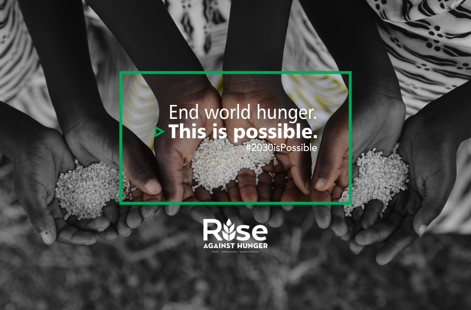
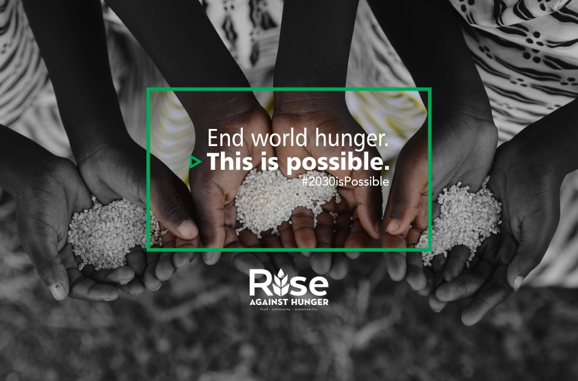

Most children from low-income families go to school hungry, which in turn, hurts their performance in school.
Going hungry does not always means the same thing to everyone. For some, there may be no food in the house and no money to buy any.
Maybe there is food in the house, but not enough to feed all members of the family. Whatever the situation, more often than not,
kids who don’t have continuous access to three healthy meals a day are much more likely to face unhealthy, unsuccessful and uncertain
futures.
 =======

>>>>>>> dd14869a60deed3bbf7fde9c3864e2767b72be25
=======

>>>>>>> dd14869a60deed3bbf7fde9c3864e2767b72be25
Education is key to acquire the necessary knowledge to increase agricultural production and the income of small farmers,
especially women and indigenous peoples, while respecting the environment, the biodiversity and the resources of each region.
Correct and up-to-date knowledge also helps to prevent problems potentially causing famines, such as drought, floods, and other
disasters.
(Access to Learning objectives for SDG-2)
At this level, learners get acquainted with the tastes and textures of different foods.
They develop the required abilities to identify healthier food options such as fruits and vegetables,
thus making healthier choices, and allowing them to serve as role models within their schools and their
surrounding communities later in life.
(Access Educational materials here)
Through gardening activities, combined with eating food they produce themselves, learners
at this level develop healthy dietary practices. They also develop the required ability to read and interpret labels,
ingredients' lists and health labels.
Furthermore, they learn to appreciate indigenous and local perspectives on ways
of living together and using existing resources in a sustainable manner.
(Access Educational materials here)